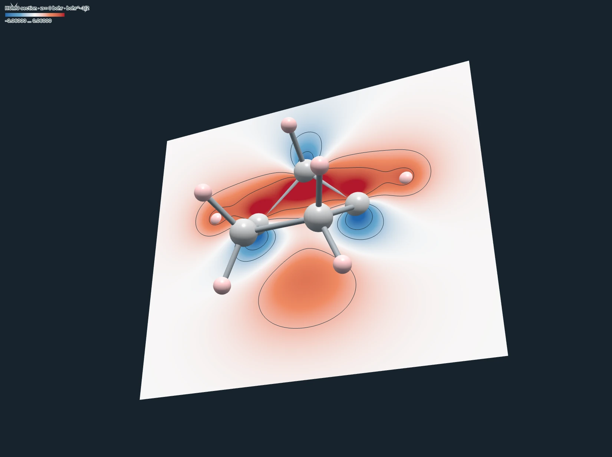

A colored surface suggests shape. A probe, slice and line profile tell you what values are actually there.


1. Select a field with known provenance
Open bicyclic-c7h10.molden in EigenVista 0.10.5. Expand Fields → Quantitative field inspection and choose the example's HOMO, MO 26, as the analysis field.
Inspect Field meaning and units: this is the real orbital amplitude ψ, with values expressed in bohr⁻³ᐟ² under the supplied basis/coefficients. The signs are orbital phase, not positive and negative charge. Total electron density is a different, nonnegative field, ρ = Σ ni|ψi|², in electrons/bohr³. This tutorial samples the supplied HOMO; it does not calculate a new wavefunction or a density from its color.
2. Read one source point
Choose Point probe. Enter a coordinate with an explicit Å/bohr choice, or select exactly one atom and choose selected source atoms. Create the result and inspect its numerical value, unit and sampling method. Moving the camera or changing 3D preview resolution must not change the number.
Analytic Molden fields are evaluated directly; imported cube fields are interpolated from their original samples. These are different methods and are identified as such.
3. Make the illustrated plane
- Choose Plane / contours and coordinate units bohr.
- Choose XY, center 0, 0, 0, width 14 and height 12.
- Set 192 columns and 192 rows, label it HOMO section, and create the analysis.
- Choose View meshes and analyses if a sampled 3D field hides it. Hide unrelated saved meshes separately.
- Under the result, disable automatic sampled range and set −0.06 to +0.06. Choose the blue/white/red colormap and enable its numeric key.
- Enter contour levels −0.04, −0.02, 0.02, 0.04 and choose Apply result settings.
For a local molecular frame, pick three noncollinear atoms and choose Three selected atoms instead. The first centers the plane, the second defines its horizontal direction, and the third fixes the orientation. A plane aligned to atoms is not automatically an orbital nodal plane.
4. Plot a profile along the measured bond
Select atoms 1, 2 in order. Create a Line profile from selected atoms with 257 samples. Both endpoints are included, and the distance axis should span approximately 1.525 Å. Read the values and any sign changes rather than interpreting only a hue.
Use Numerical samples and provenance to page the accepted values. Export analysis CSV keeps coordinates/profile distances in Å, values in the selected display/export scalar unit, and method/source information. A profile is not a line integral or a bond-order calculation.
5. Apply the workflow to an unknown cube field
The 29-atom cube example contains an 84 × 84 × 84 scalar grid, with sampled values between 0 and 1. Its supplied meaning/units are unspecified. You can probe, slice, contour and export numerical values without inventing an identity such as electron density or ELF from the filename.
Declare a meaning only when you have producer provenance. Outside the finite grid, a probe is marked outside, a plane has missing regions and a profile has gaps. Those samples are not zeros or extrapolated values. Finer interpolation does not add information to the original grid.
6. Save a reproducible numerical result
Export a PNG with its visible numeric key and save a new native document. Reopen it to confirm definitions, accepted numerical caches and interpretation survive without silent recalculation. Use a fixed range for comparisons and record the camera/session choices separately.
Ask your agent instead
In EigenVista 0.10.5, inspect the HOMO of the C7H10 example. Make an XY section centered at the origin, 14 by 12 bohr with 192 by 192 samples. Use a fixed amplitude range from minus 0.06 to plus 0.06 and contours at plus and minus 0.02 and 0.04, with units visible. Also plot 257 values along the bond between atoms 1 and 2. Save an image with the key, both numerical tables and a new native document. Preserve the source and verify the saved outputs.